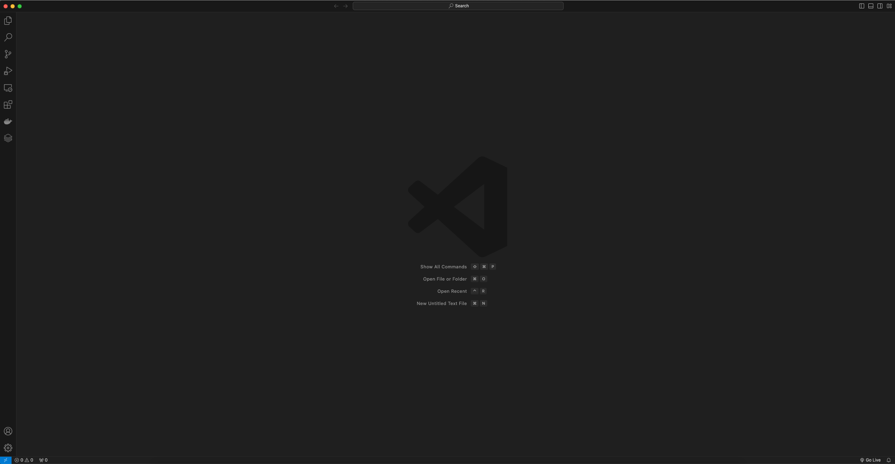
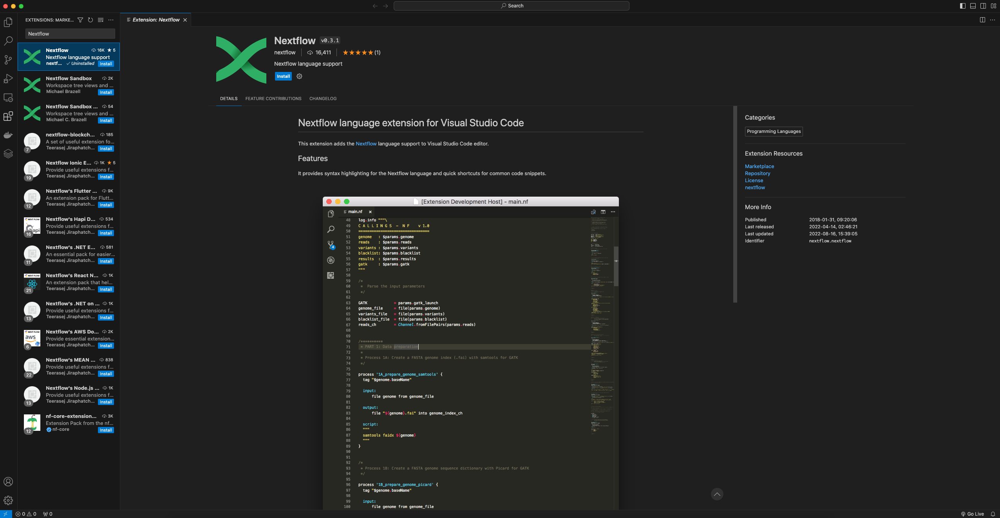
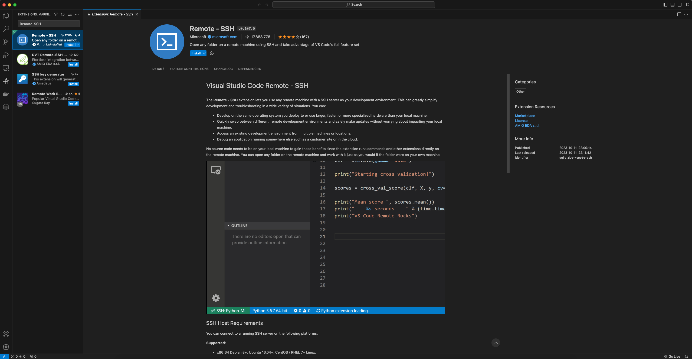
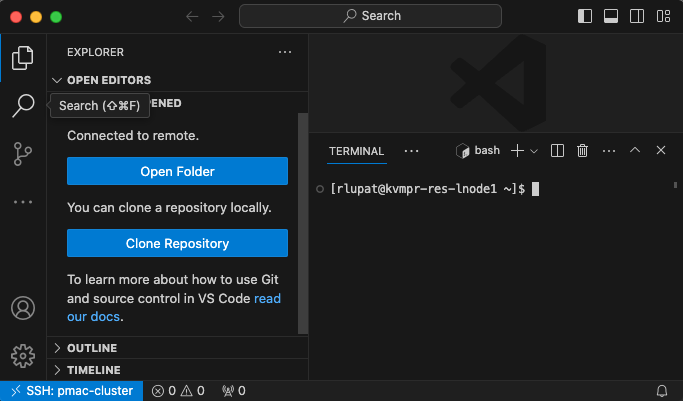

Essential Workshop Preparation
In this workshop, we will be using Peter Mac’s HPC to run nextflow and nf-core workflows.
Before joining the workshop, please complete the following checklist:
- Install Visual Studio Code (recommended) or Terminal application
- Install the Nextflow and Remote-SSH VSC extensions (below) for VSCode user
- Test your remote connection to Peter Mac HPC; and create a directory
/scratch/users/<your-username>/nfWorkshopin your scratch space. This will be our working directory
Option 1: Install and set up Visual Studio Code
We recommend Visual Studio Code as a source code editor because it is lightweight and has rich support for extensions and syntax highlighting available across various popular operating system.
Download Visual Studio Code on your computer and follow the instructions for your specific Operating System as required:
Once installed, open VS Code on your computer.

Install the Nextflow Extension
The Nextflow extension provides syntax highlighting and quick shortcuts for common code snippets.
Click on the extensions button (four blocks) on the left side bar. Search for “Nextflow” in the extensions search bar, then click on the blue “Install” button.

Install the Remote-SSH Extension
Remote-SSH allows us to use any remote machine with a SSH server as your development environment. This lets us work directly on the our cluster’s storage.
Click on the extensions button (four blocks) on the left side bar. Search for “Remote - SSH” in the extensions search bar, then click on the blue “Install” button.

Login via Visual Studio Code
Connect to your instance with VS code by adding the host details to your .ssh config file (if you have not done this previously)
- In a new VS code window, type Ctrl+Shift+P if you’re on a Windows machine or Cmd+Shift+P for MacOS to open the command palette
- Select Remote-SSH: Open SSH configuration file and select your .ssh config file
- Add a new entry with your details to login to cluster, and save your .ssh config file:
Host pmac-cluster
HostName kvmpr-res-lnode1.unix.petermac.org.au
User <your-cluster-user-name>- Type Ctrl+Shift+P and select Remote-SSH: Connect to Host; and pmac-cluster (or whatever you name your host above)
- When prompted, select Linux as the platform of the remote host from the dropdown menu
- Type in your password and hit enter
Having successfully logged in, you should see a small blue or green box in the bottom left corner of your screen:

To set up your VS Code window for the workshop:
- Open a new folder in the file explorer panel on the left side of the screen by typing Ctrl + K, Ctrl + O if you’re running Windows or Cmd+K+ Cmd + O for MacOS
- Select
/scratch/users/<your-username>/nfWorkshopto open our working directory. If you encountered an error that the directory does not exist, you would need to ssh in to the cluster and create that directory first before attempting this step. - When prompted, select the box for Trust the authors of all files in the parent folder ‘home’ then click Yes, I trust the authors
- You can dismiss the warning message saying our cluster’s git version is outdated
- To open a terminal, type Ctrl+J if you’re on a Windows machine or Cmd+J on MacOS
Option 2: Terminal
No additional setup required. SSH to cluster as usual, and we assume you are already familiar with command line if you decided to go with this option. 😄
This setup instruction is adapted from Customising Nf-Core Workshop materials from Sydney Informatics Hub